For my CNC project, I wanted to make some custom coasters or settles of Catan tiles. I started by creating a simple design in Fusion360. The eventual idea was to use the CNC to carve actual relief/quarries/mountains/ridges into the tiles. I tried at first to do this using a website, https://touchterrain.geol.iastate.edu/main, but it proved difficult to get working. Namely, the CNC would just go up, spin, and go down without actually tracing out the tooln path. I looked up a few tutorials for the monoFab but it was all for PCB millig. I thought it might have been a problem with the STL filen so I then tried to use Fusion360 software to create the desired relief alongside a tutorial and Terrain2STL. However, I couldn't really get anything to work particulalry well and also realized that the CNC would not be able to carve the relief as deeply as I wanted in order to attain the desire 3D effect but still have the coaster be flat enough to work as a coaster. I then decided to just put a nice font like the online catan font on the tiles but I still couldnt get it to work. I then pivoted to a simpler shape just to get things working which was simple a square with a recessed circle in the 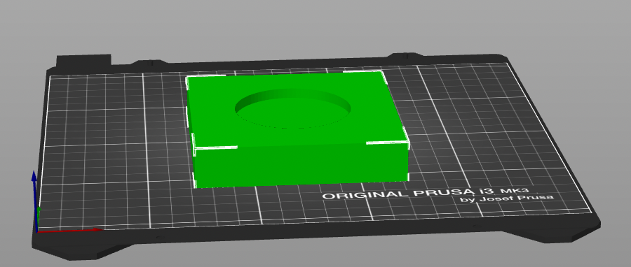. However, after about an hour and a half, I couldn't get it to work, until Nathan came over and essentially just restarted the machine. After that it worked like a charm? I'm not sure what was wrong but I'm glad it worked. Hopefully now that I understand the process better I can get the more complicated parts to work sometime soon. 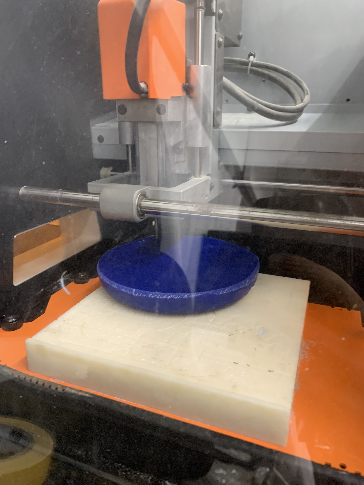 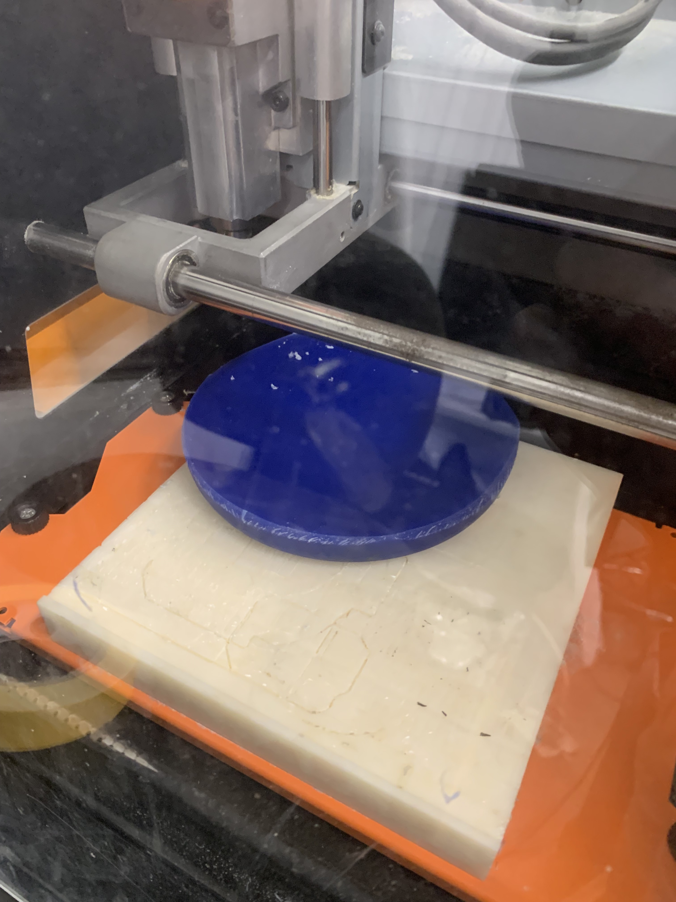 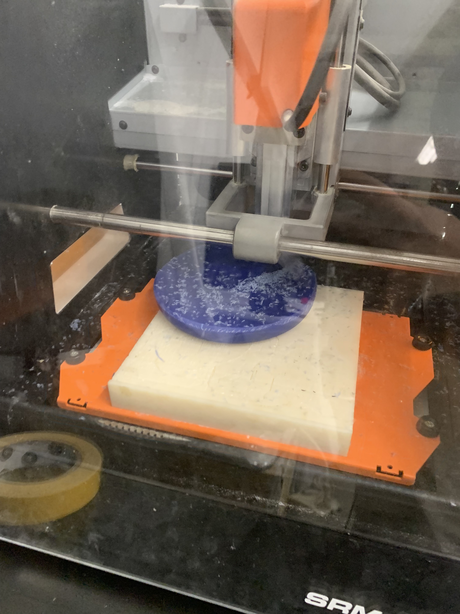 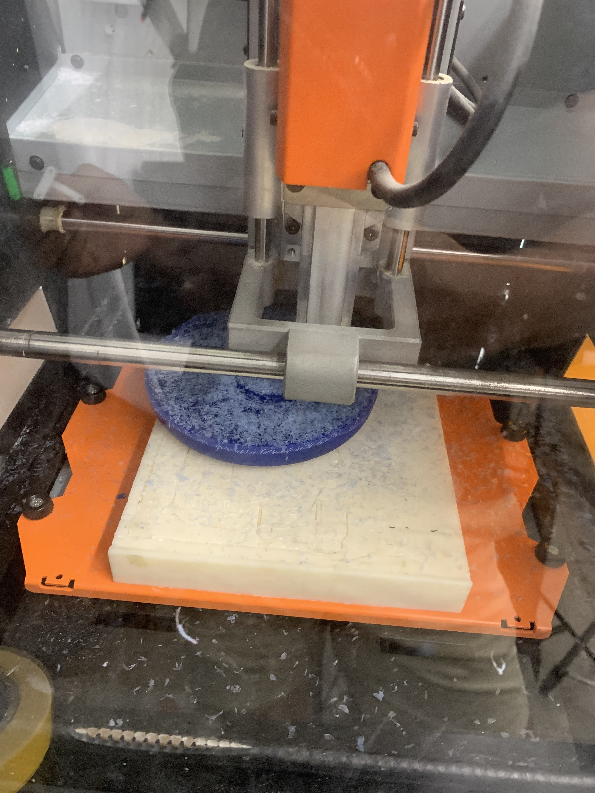 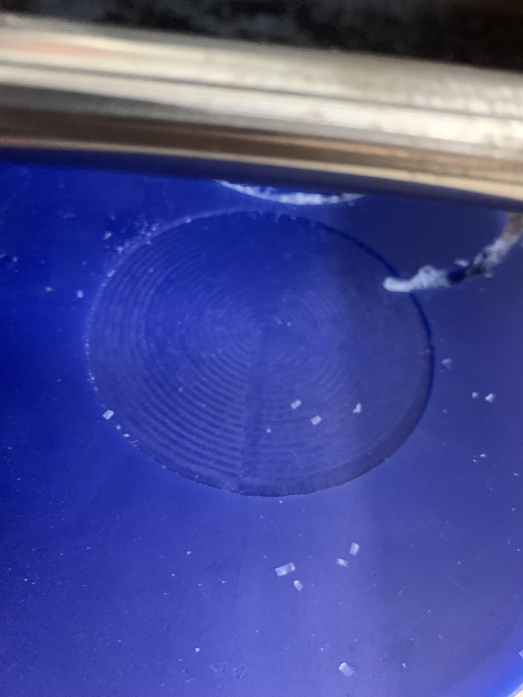 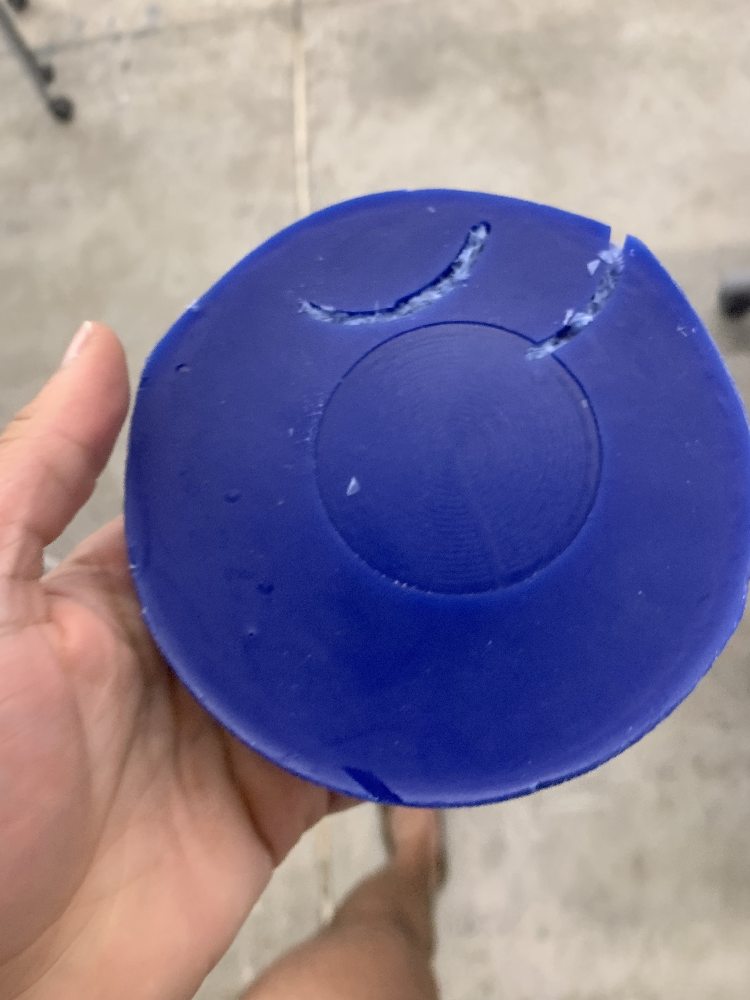 For my molding and casting project, I first wanted to make resin chess pieces. I thought makeing them out of clear colored expoxy could produce a really clean look. I started by 3D printing a positive. The idea was to use some solvent to then make the pieces really smooth, use that to make a silicone negative, and then use that to cast a whole set in clear resin. I also thought as a next steo it would be cool to put LEDs in them so that they light up. However, my 3D print of the chess pieces failed twice after about an hour and I ran out of time, so I had to pivot. I think it was because I was printing a Knight without support, and the overhang from the face was too much. Thus I pivoted to instead make CS50 ducks. I made a mold in expoxy by gluing the duck to the lid of a containeer and filling the container up to make a negative. Unfortunately there was no oomu left so I had to use resin for the mold, and the mixing was a bit difficult as it was by weight and not by volume alongside all the scales were broken. It turns out expoxy is really hard and I was completely unable to remove the duck so now I have a cool paperweight. I tried again using foodsafe silicone and a 3d printe duck in order to make duck-shaped ice which worked much better! Overall, I had a great time working on these projects. CNC and molding/casting are both really cool techniques that offer a lot of creative possibilities. I'm excited to keep experimenting with these tools and seeing what else I can make! 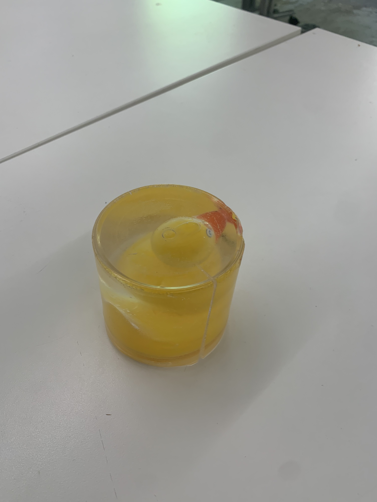 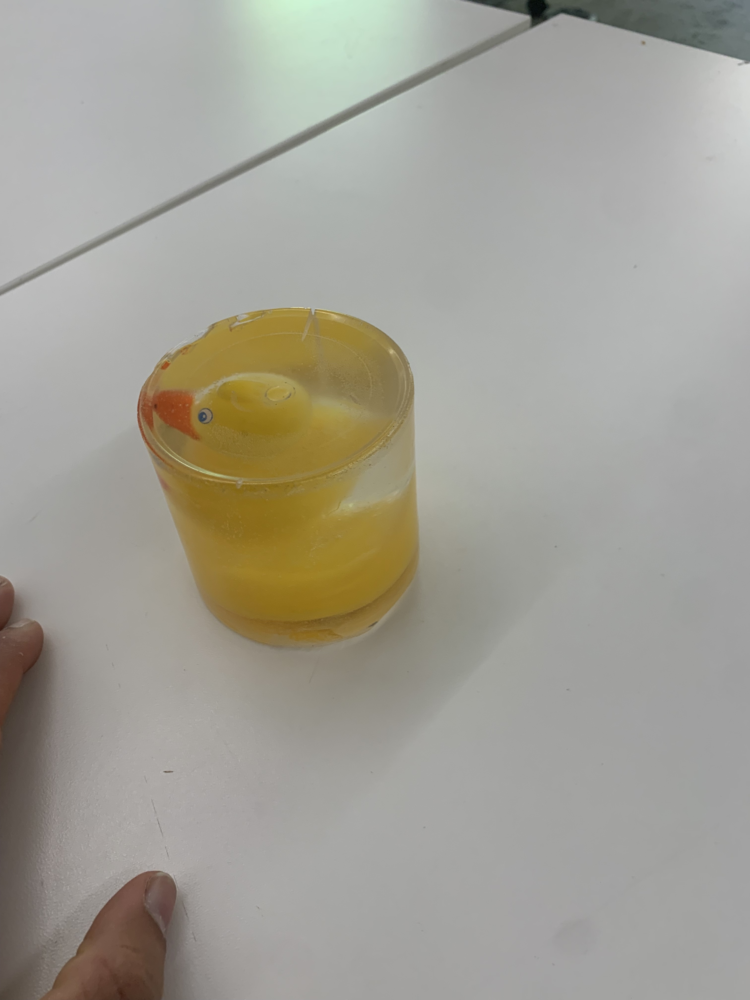 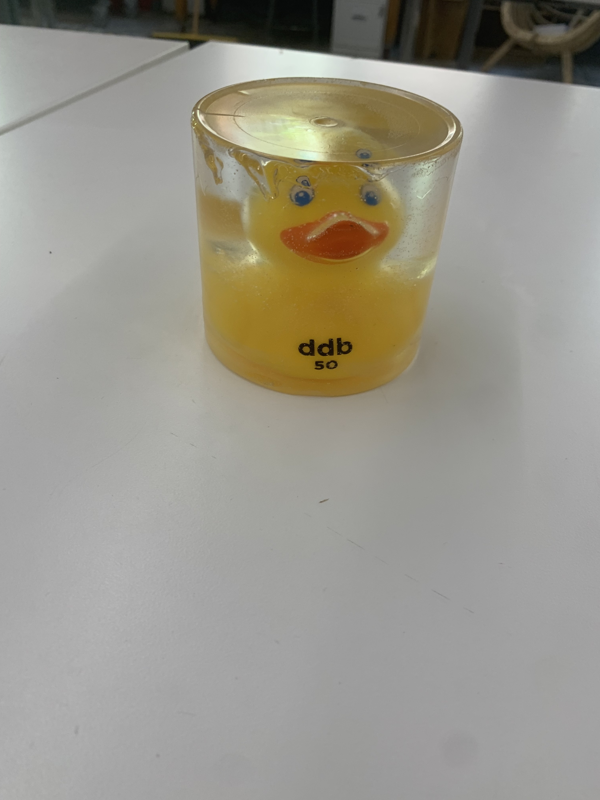 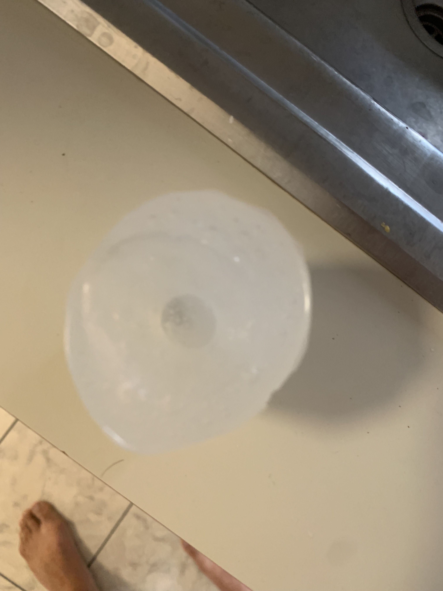 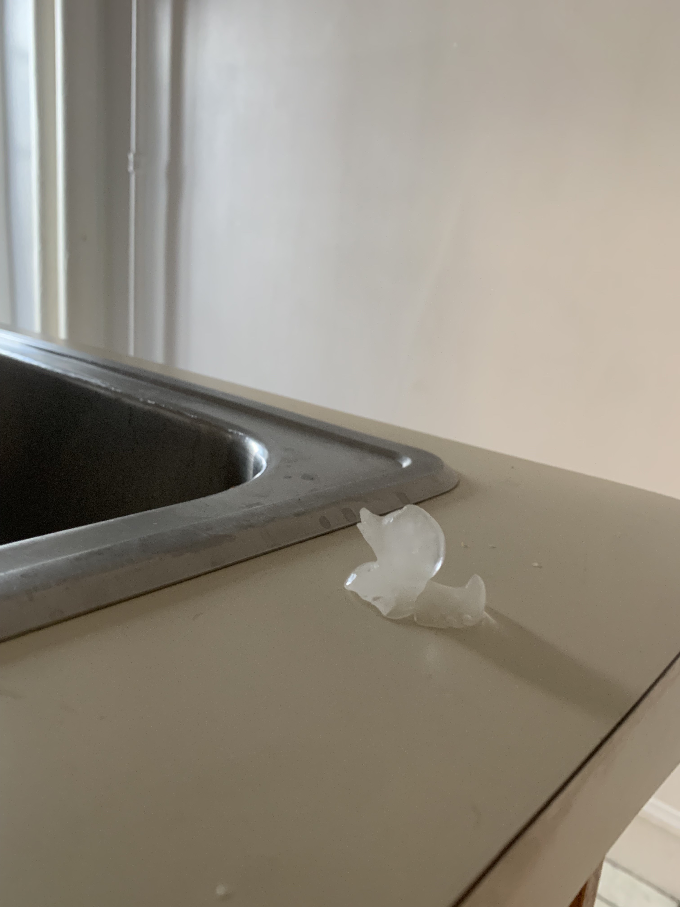 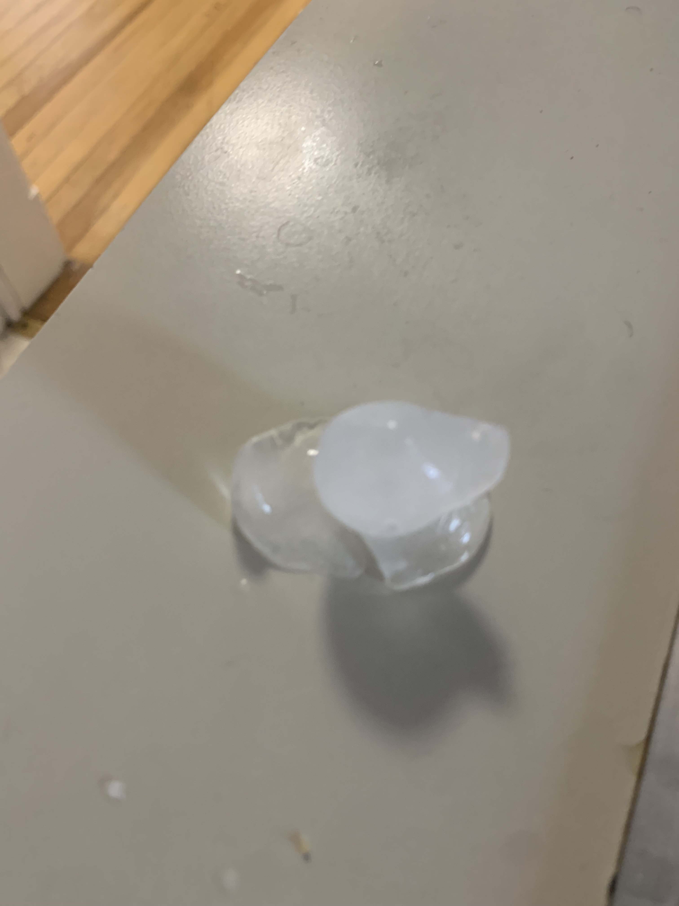